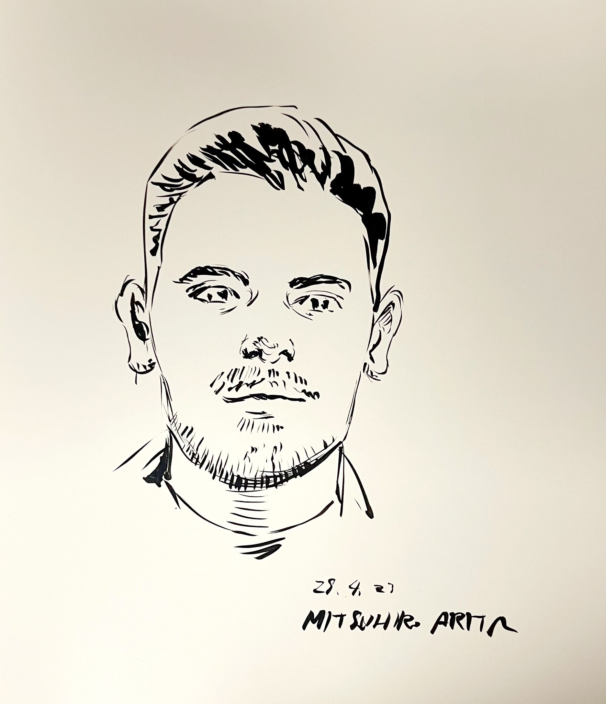

Ammar Kheder
Doctoral Researcher in Computational Engineering · LUT University · AMC-Lahti
Teaching neural networks how the atmosphere flows.
Foehn preprint → Explore the 1 km forecasts Watch the film (8 min)

I build forecasts of the air we breathe, at the scale where people live. My models compute what physics knows, how the atmosphere carries pollution from where it was emitted, and learn the rest with generative networks. The latest, Foehn, forecasts PM2.5 at 1 km over all inhabited land up to a week ahead, as calibrated ensembles (preprint, October 2026). Based at LUT University in Lahti, with the Atmospheric Modelling Centre (AMC-Lahti) and INAR, University of Helsinki.
I have hands-on experience running large-scale distributed training on the LUMI supercomputer, scaling experiments up to 1,024 AMD MI250X GPUs for training vision transformer models on high-resolution atmospheric reanalysis data.
MSc in Engineering (Big Data & AI) from EiCnam Paris, with a one-year apprenticeship at INRIA Bordeaux within the Mnemosyne team, co-led by Frédéric Alexandre and Nicolas Rougier.
Keywords. Air quality, atmospheric modelling, generative models (flow matching), Lagrangian transport, physics-informed neural networks, vision transformers, high-performance computing, large-scale distributed training.
1 km
Foehn, global forecasts
7 days ahead, all inhabited land
npj
Nature Portfolio
1 publication, 2026
10
Citations
across 4 works
1,024
GPUs scaled
LUMI / AMD MI250X

Latest preprint · October 2026 · lead author
Foehn
Global probabilistic forecasting of air pollution: kilometre-scale, calibrated ensembles of PM2.5 up to a week ahead over all inhabited land. A generative model that computes where the air comes from (FLEXGREEN) and learns the rest.
arXiv preprint 2610.25941, with M. Boy and Z.-S. Liu.
Read the case study →
Watch · Scientific video
Research
Three questions, one line of work: where does the air come from, what does it carry, and how do we forecast it at the scale where people live?
Preprint · 2026
Foehn
Global, kilometre-scale, probabilistic forecasts of PM2.5 up to a week ahead: a generative model that computes where the air comes from and learns the rest. More accurate than the operational forecast at three stations in four.
Read the case study →

FLEXGREEN · Green's functions of the transport
Where was the air you breathe?
The air above any place, followed backwards through the weather forecast with no learned parameter. Click anywhere on land and see where its air was on the three previous days.
Try it →
News
- 23 Oct 2026 New Foehn from A to Z, an animated series that explains how Foehn works: twelve episodes and a full film of about 44 minutes, from the problem and the data to FLEXGREEN, the generator and the results. English, with AI-dubbed audio on the episodes (up to 10 languages); narration and music generated by AI. Watch the series.
- Oct 2026 Foehn, global kilometre-scale probabilistic forecasts of air pollution: preprint on arXiv, interactive forecasts and an 8-minute film at ammarkheder.com/Foehn, code on GitHub.
- September 2026 Presented TopoFlow, our physics-guided Vision Transformer for high-resolution air quality prediction, at IAC 2026 (International Aerosol Conference) in Xi’an, China, with great conversations with the community on day one.
- August 2026 Invited talk at the Boya Forum on Environmental Research, Peking University College of Environmental Sciences and Engineering, Beijing, presenting “Encoding Topography, Wind, and Cross-Scale Atmospheric Context into Vision Transformers for High-Resolution Air Pollution Forecasting” and sharing recent work on TopoFlow and CRAN-PM, hosted by Dongjie Shang.
- June 2026 Research visit to the ARCHES team at Inria, hosted by Claire Monteleoni, to strengthen the France–Finland collaboration.
- Apr 2026 TopoFlow published in npj Climate and Atmospheric Science (Nature Portfolio).
- May 2026 Two-day research stay (5–6 May) with AMC member Prof. Jia Chen and her group at the Technical University of Munich (TUM), marking the start of a new international collaboration.
- Apr 2026 Talk accepted at IAC 2026 (International Aerosol Conference), Xi’an, China.
Publications
-
Global probabilistic forecasting of air pollution
arXiv preprint, 2026.
BibTeX
@misc{kheder2026foehn, title = {Global probabilistic forecasting of air pollution}, author = {Kheder, Ammar and Boy, Michael and Liu, Zhi-Song}, year = {2026}, eprint = {2610.25941}, archivePrefix = {arXiv}, primaryClass = {cs.AI}, url = {https://arxiv.org/abs/2610.25941} } -
TopoFlow: topography-aware pollutant Flow learning for high-resolution air quality prediction
npj Climate and Atmospheric Science 9, 143, Nature Portfolio, 2026.
BibTeX
@article{kheder2026topoflow, title = {TopoFlow: topography-aware pollutant flow learning for high-resolution air quality prediction}, author = {Kheder, Ammar and Toropainen, Helmi and Peng, Wenqing and Ant{\~a}o, Samuel and Chen, Jia and Boy, Michael and Liu, Zhi-Song}, journal = {npj Climate and Atmospheric Science}, volume = {9}, number = {1}, pages = {143}, year = {2026}, doi = {10.1038/s41612-026-01417-5} } -
CRAN-PM: Cross-Resolution Attention Network for High-Resolution PM2.5 Prediction
Preprint, 2026.
BibTeX
@misc{kheder2026cranpm, title = {CRAN-PM: Cross-Resolution Attention Network for High-Resolution PM2.5 Prediction}, author = {Kheder, Ammar and Toropainen, Helmi and Peng, Wenqing and Ant{\~a}o, Samuel and Liu, Zhi-Song and Boy, Michael}, year = {2026}, eprint = {2603.11725}, archivePrefix = {arXiv}, url = {https://arxiv.org/abs/2603.11725} } -
Inverse Neural Operator for ODE Parameter Optimization
Preprint, 2026.
-
Deep Spatio-Temporal Neural Network for Air Quality Reanalysis
Scandinavian Conference on Image Analysis (SCIA), Springer LNCS, 2025.
BibTeX
@inproceedings{kheder2025aqnet, title = {Deep Spatio-Temporal Neural Network for Air Quality Reanalysis}, author = {Kheder, Ammar and Foreback, Benjamin and Wang, Lili and Liu, Zhi-Song and Boy, Michael}, booktitle = {Scandinavian Conference on Image Analysis (SCIA)}, series = {Lecture Notes in Computer Science}, publisher = {Springer}, year = {2025}, doi = {10.1007/978-3-031-95911-0_6} }
Experience
| 2024 – now | Junior Researcher & Teaching Assistant → LUT University, Lahti, Finland |
| 2023 – 2026 | CEO, Wabel Group AI services and web development |
| 2021 – 2022 | Research Engineer (Apprenticeship) INRIA Bordeaux, Mnemosyne team |
| 2021 – 2023 | Volunteer Firefighter → Sapeurs-pompiers des Deux-Sèvres |
Education
| 2024 – now | Ph.D. Computational Engineering LUT University, Finland |
| 2021 – 2024 | MSc Engineering, Big Data & AI EiCnam Paris, with apprenticeship at INRIA Bordeaux |
| 2019 – 2021 | Bachelor, Data Science BUT Niort. Statistics, Big Data, Business Intelligence |
| 2016 – 2017 | BIA Aeronautical Initiation → Lycée Paul-Guérin, Niort |